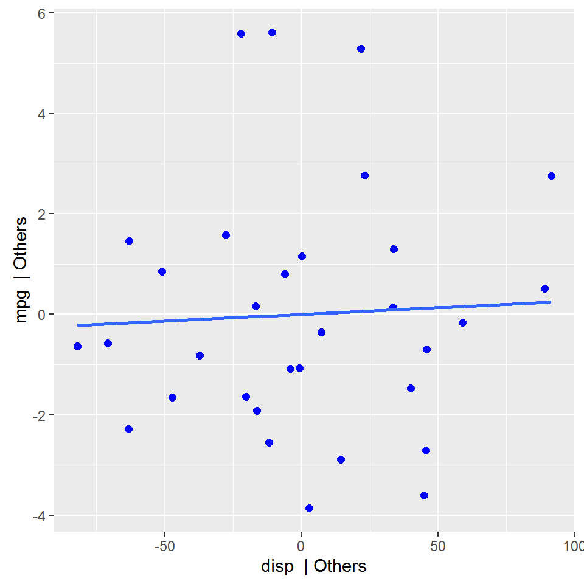

Introduction to olsrr
2017-06-05
Introduction
The olsrr package provides following tools for teaching and learning OLS regression using R:
- comprehensive regression output
- residual diagnostics
- measures of influence
- heteroskedasticity tests
- collinearity diagnostics
- model fit assessment
- variable contribution assessment
- variable selection procedures
This document is a quickstart guide to the tools offered by olsrr. Other vignettes provide more details on specific topics:
Residual Diagnostics: Includes plots to examine residuals to validate OLS assumptions
Variable selection: Differnt variable selection procedures such as all possible regression, best subset regression, stepwise regression, stepwise forward regression and stepwise backward regression
Heteroskedasticity: Tests for heteroskedasticity include bartlett test, breusch pagan test, score test and f test
Measures of influence: Includes 10 different plots to detect and identify influential observations
Collinearity diagnostics: VIF, Tolerance and condition indices to detect collinearity and plots for assessing mode fit and contributions of variables
Regression
ols_regress(mpg ~ disp + hp + wt + qsec, data = mtcars)## Model Summary
## --------------------------------------------------------------
## R 0.914 RMSE 2.622
## R-Squared 0.835 Coef. Var 13.051
## Adj. R-Squared 0.811 MSE 6.875
## Pred R-Squared 0.771 MAE 1.858
## --------------------------------------------------------------
## RMSE: Root Mean Square Error
## MSE: Mean Square Error
## MAE: Mean Absolute Error
##
## ANOVA
## ----------------------------------------------------------------
## Sum of
## Squares DF Mean Square F Sig.
## ----------------------------------------------------------------
## Regression 940.412 4 235.103 34.197 0.0000
## Residual 185.635 27 6.875
## Total 1126.047 31
## ----------------------------------------------------------------
##
## Parameter Estimates
## ----------------------------------------------------------------------------------------
## model Beta Std. Error Std. Beta t Sig lower upper
## ----------------------------------------------------------------------------------------
## (Intercept) 27.330 8.639 3.164 0.004 9.604 45.055
## disp 0.003 0.011 0.055 0.248 0.806 -0.019 0.025
## hp -0.019 0.016 -0.212 -1.196 0.242 -0.051 0.013
## wt -4.609 1.266 -0.748 -3.641 0.001 -7.206 -2.012
## qsec 0.544 0.466 0.161 1.166 0.254 -0.413 1.501
## ----------------------------------------------------------------------------------------Residual vs Fitted Values Plot
Plot to detect non-linearity, unequal error variances, and outliers.
model <- lm(mpg ~ disp + hp + wt + qsec, data = mtcars)
ols_rvsp_plot(model)
DFBETAs Panel
DFBETAs measure the difference in each parameter estimate with and without the influential observation. dfbetas_panel creates plots to detect influential observations using DFBETAs.
model <- lm(mpg ~ disp + hp + wt, data = mtcars)
ols_dfbetas_panel(model)
Residual Fit Spread Plot
Plot to detect non-linearity, influential observations and outliers.
model <- lm(mpg ~ disp + hp + wt + qsec, data = mtcars)
ols_rfs_plot(model)
Added Variable Plot
Added variable plot provides information about the marginal importance of a predictor variable \(X_{k}\), given the other predictor variables already in the model. It shows the marginal importance of the variable in reducing the residual variability.
model <- lm(mpg ~ disp + hp + wt + qsec, data = mtcars)
ols_avplots(model)
Breusch Pagan Test
Breusch Pagan test is used to test for herteroskedasticity (non-constant error variance). It tests whether the variance of the errors from a regression is dependent on the values of the independent variables. It is a \(\chi^{2}\) test.
model <- lm(mpg ~ disp + hp + wt + drat, data = mtcars)
ols_bp_test(model)##
## Breusch Pagan Test for Heteroskedasticity
## -----------------------------------------
## Ho: the variance is constant
## Ha: the variance is not constant
##
## Data
## -------------------------------
## Response : mpg
## Variables: fitted values of mpg
##
## Test Summary
## -------------------------
## DF = 1
## Chi2 = 1.4297
## Prob > Chi2 = 0.2318Collinearity Diagnostics
model <- lm(mpg ~ disp + hp + wt + qsec, data = mtcars)
ols_coll_diag(model)## Tolerance and Variance Inflation Factor
## ---------------------------------------
## # A tibble: 4 × 3
## Variables Tolerance VIF
## <chr> <dbl> <dbl>
## 1 disp 0.125 7.985
## 2 hp 0.194 5.167
## 3 wt 0.145 6.917
## 4 qsec 0.319 3.133
##
##
## Eigenvalue and Condition Index
## ------------------------------
## Eigenvalue Condition Index intercept disp hp wt qsec
## 1 4.721 1.000 0.00 0.00 0.00 0.00 0.00
## 2 0.217 4.669 0.00 0.04 0.03 0.00 0.00
## 3 0.050 9.677 0.00 0.12 0.39 0.04 0.00
## 4 0.010 21.616 0.03 0.78 0.06 0.70 0.00
## 5 0.001 57.481 0.97 0.06 0.52 0.26 0.99Stepwise Regression
Build regression model from a set of candidate predictor variables by entering and removing predictors based on p values, in a stepwise manner until there is no variable left to enter or remove any more.
Variable Selection
# stepwise regression
model <- lm(y ~ ., data = surgical)
ols_stepwise(model)## We are selecting variables based on p value...## 1 variable(s) added....## 1 variable(s) added...
## 1 variable(s) added...
## 1 variable(s) added...
## 1 variable(s) added...## No more variables to be added or removed.## Stepwise Selection Method
##
## Candidate Terms:
##
## 1 . bcs
## 2 . pindex
## 3 . enzyme_test
## 4 . liver_test
## 5 . age
## 6 . gender
## 7 . alc_mod
## 8 . alc_heavy
##
## ------------------------------------------------------------------------------------------
## Stepwise Selection Summary
## ------------------------------------------------------------------------------------------
## Added/ Adj.
## Step Variable Removed R-Square R-Square C(p) AIC RMSE
## ------------------------------------------------------------------------------------------
## 1 liver_test addition 0.455 0.444 62.5119 771.8753 296.2992
## 2 alc_heavy addition 0.567 0.550 41.3681 761.4394 266.6484
## 3 enzyme_test addition 0.659 0.639 24.3379 750.5089 238.9145
## 4 pindex addition 0.750 0.730 7.5373 735.7146 206.5835
## 5 bcs addition 0.781 0.758 3.1925 730.6204 195.4544
## ------------------------------------------------------------------------------------------Plot
model <- lm(y ~ ., data = surgical)
k <- ols_stepwise(model)## We are selecting variables based on p value...## 1 variable(s) added....## 1 variable(s) added...
## 1 variable(s) added...
## 1 variable(s) added...
## 1 variable(s) added...## No more variables to be added or removed.plot(k)
Stepwise AIC Backward Regression
Build regression model from a set of candidate predictor variables by removing predictors based on Akaike Information Criteria, in a stepwise manner until there is no variable left to remove any more.
Variable Selection
# stepwise aic backward regression
model <- lm(y ~ ., data = surgical)
k <- ols_stepaic_backward(model)
k##
##
## Backward Elimination Summary
## -------------------------------------------------------------------------
## Variable AIC RSS Sum Sq R-Sq Adj. R-Sq
## -------------------------------------------------------------------------
## Full Model 736.39 1825905.713 6543614.824 0.782 0.743
## alc_mod 734.407 1826477.828 6543042.709 0.782 0.749
## gender 732.494 1829435.617 6540084.920 0.781 0.754
## age 730.62 1833716.447 6535804.090 0.781 0.758
## -------------------------------------------------------------------------### Plotmodel <- lm(y ~ ., data = surgical)
k <- ols_stepaic_backward(model)
plot(k)